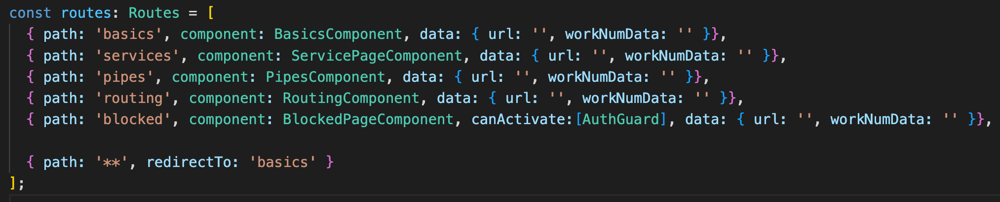

Routing
File Name : app-routing.module.ts
this.router.navigate(['routeName']);

Authguard
Create new Auth Guard
- ng g guard guardName
- Select type of guard
Types of Authguard
- CanActivate : Will not allow user to reach the rout : if AuthGuard is set to true it wil allow
- CanActivateChild :
- CanDeactivate :
- Resolve :
- CanLoad :